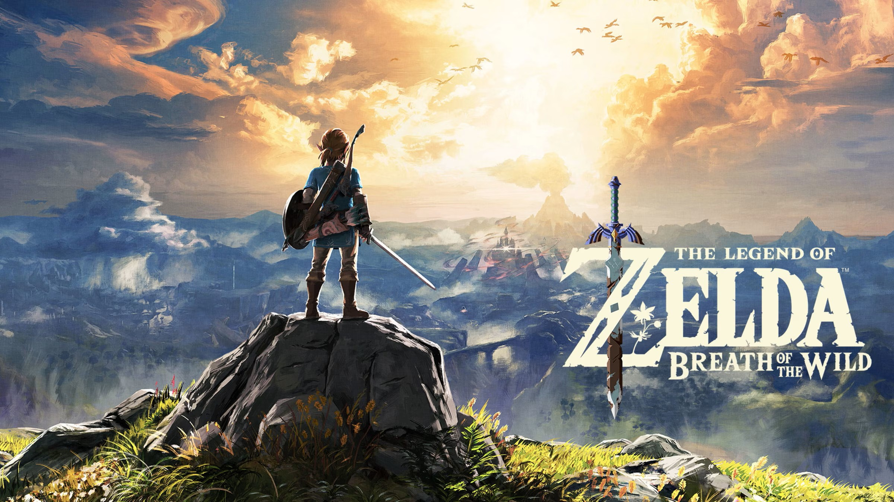
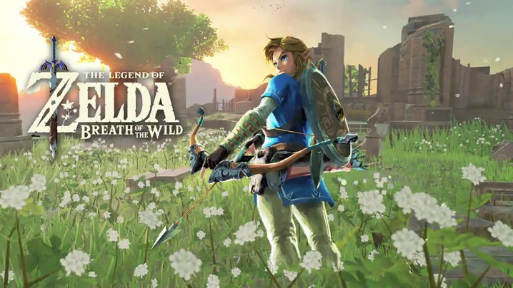

Why Breath of the Wild Still Feels Special
Breath of the Wild stands out because it gives players freedom right from the start. Instead of forcing one path, the game encourages exploration, experimentation, and creativity. Players can climb mountains, cook meals, discover shrines, and take on enemies in different ways. The open world makes every play session feel a little different. Even small discoveries can feel rewarding. Whether someone wants to focus on the story or just wander around Hyrule, the game makes exploration feel exciting and personal in a way that keeps many players coming back.

Best Things to Do Early Game
One of the best things a new player can do is activate towers and complete shrines. Towers reveal sections of the map and make travel much easier. Shrines help build health and stamina, which both matter a lot in the early game. It also helps to collect ingredients and experiment with cooking, because healing meals and stamina foods can make exploring less stressful. Players should also take time to learn how weather, temperature, and weapons work. Early on, the game rewards patience and curiosity much more than rushing directly into danger.
Shrines, Towers, and Exploration
Exploration is one of the strongest parts of Breath of the Wild. Shrines are useful not only because they give Spirit Orbs, but also because they act as fast travel points across the map. Towers serve a similar purpose by helping players understand the layout of each region. Together, they encourage players to move through Hyrule in a thoughtful way. Many players find that simply heading toward something interesting in the distance often leads to rewards, side quests, materials, or enemies worth fighting. The game is at its best when it lets players discover things naturally.
Combat and Survival Tips
Combat in Breath of the Wild can feel challenging at first, especially because weapons break and enemies can hit hard. A smart approach is to use the environment whenever possible. Rolling boulders, using fire, or surprising enemies from above can make fights much easier. Shields, dodging, and timing are also important skills to practice. Survival is not only about combat though. Weather can affect climbing, lightning can strike metal equipment, and cold regions require warm clothing or food. Learning how these systems work makes the game feel deeper and more rewarding over time.

Why So Many Players Still Love It
Even years after its release, Breath of the Wild is still popular because it gives players memorable moments that feel like their own. Some remember their first difficult battle, while others remember finding a hidden shrine or finally reaching a tall mountain. The world feels calm and dangerous at the same time, which makes exploring it memorable. The art style, music, and freedom all work together to create a strong atmosphere. For many players, the game feels less like following instructions and more like going on a personal adventure through Hyrule.